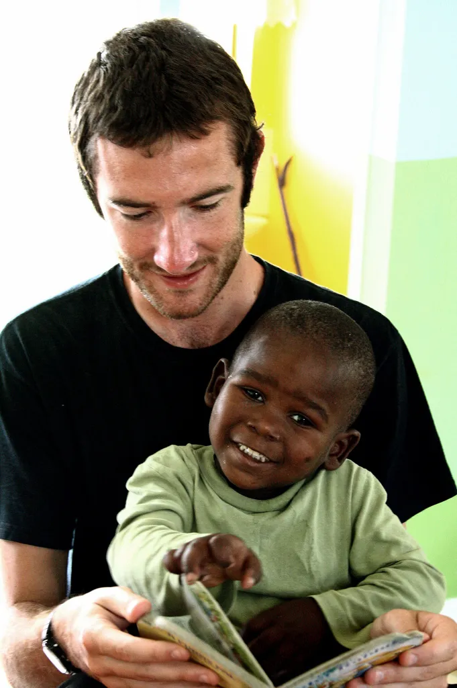

Princess Cares Foundation is proud to announce the launch of our latest initiative, the "Empower Youth Education Program," aimed at providing educational resources and support to underprivileged children in our community. This program is designed to bridge the gap for students who lack access to essential educational tools and opportunities, ensuring that every child has the chance to succeed academically and beyond.
The Empower Youth Education Program will offer a variety of services, including after-school tutoring, scholarship opportunities, and access to digital learning resources. We are partnering with local schools, educators, and volunteers to create a supportive learning environment where students can thrive.
Princess Mhlongo, Founder and CEO of Princess Cares Foundation, shared her excitement about the new program: “Education is the key to unlocking a brighter future for our youth. With the Empower Youth Education Program, we aim to provide the tools and support that every child deserves, regardless of their background or circumstances. We believe that by investing in education, we are investing in the future of our community.”
The program is set to kick off in September 2024, with an initial focus on primary and secondary school students. We are calling on community members, local businesses, and educators to join us in this vital initiative.
Whether through volunteering, donations, or partnership opportunities, there are many ways to get involved and make a difference.
For more information about the Empower Youth Education Program or to find out how you can contribute, please contact us at info@princesscaresfoundation.co.za or call us at +27 17 685 981.
Together, we can empower the next generation and build a brighter, more equitable future for all.
